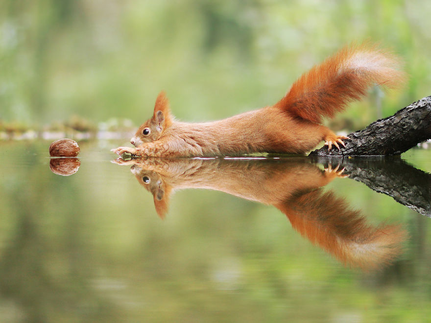

#1 Just... A Little... Bit... Closer
Possibly a reincarnation of Scrat the saber-tooth squirrel from Ice Age in his
latest pursuit of the acorn, and by acorn we actually mean this nut. Also - striking a majestic
yoga pose while at it.

#2 Happy Fox
Suddenly, a wild fox appears who seems to be sharing a personal joke with
herself. We aren't entirely sure why the smiley face, but it is very contagious.

#3 Summer Feelings..
#3 Summer Feelings.. Lost in meditation this squirrel seems to be making a wish on a flower - "oh,
please please please, let my days be filled with nuts and acorns!"

#4 European Hamster
A wish on a dandelion. We don't know what sort of wish this hamster is about to
make, but we do hope that even his smallest dreams come true.

#5 "Ohh.. Who Are You?"
This little squirrel seems to be no stranger to the wonders of winter. Though,
she built herself a companion, she seems to be contemplating whether or not her frosty friend
truly needs a nose...

#6 Say Cheeeeese
Breaking news! A fox catches another fox on camera, and seems like the latter has
plenty to say. We wonder if this encounter was coincidental, or perhaps a secret rendezvous
planned all along?

#7 Rush Hour
This fast and furious predator not only looks like he just escaped prison, he
also won the contest of Funny Wildlife Pictures 2015 while doing so. We speculate that it was
due to the contents of his cheeks, which remains a mystery up to this day.
#7 Rush Hour
Welcome back to Squirrel Yoga 101, today we have ourselves a treat. This pose
will surely cure all the leftover blues after Valentine's day, not to mention it's good for your
back! All you need to do is hit a local forest, find a mossy twig and let those bad feelings
escape you.

#9 "Can I Touch You?"
"Holy acorns! This fluff tail, the fur, and the button black eyes.. truly, an
incarnate of perfection! Where have you been my whole life?"